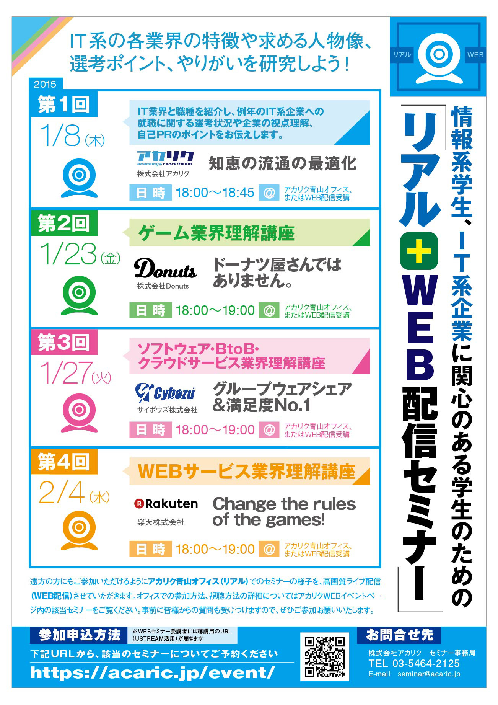
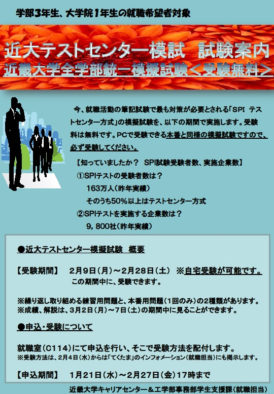

| Date | time | place | content |
|---|---|---|---|
| 2/5 | 説明会終了後 | ゼミ室 | 企業情報・就活情報の交換(終了) |
| 2/6 | 説明会終了後 | ゼミ室 | 企業情報・就活情報の交換(終了) |
| 2/7 | 説明会終了後 | ゼミ室 | 企業情報・就活情報の交換(中止) |
| 2/15 | メンバーの表示に不具合があります | ||
| 2/17 | 14:00 | ゼミ室 | 先輩の卒研発表練習を聴く（終了） |
| 2/18 | ？ | ？ | 卒研発表（終了） |
| 2/23 | 13:00 | ？ | ？ |
| 2/28 | 17:00(〆)まで | 就職室(C114) | 近大テストセンター模擬試験 申し込み締め切り |
| 5/9 | 9:30 | h102 | 公開講座補助(終了) |
| 5/18 | 12:30 | h102 | ランチミーティング（中止） |
| 5/19 | 12:30 | h102 | ランチミーティング（振り替え） |
| 5/22 | 18:00 | ゼミ室 | 福山大ミーティング |
| 6/26 | 18:00 | ゼミ室 | 福山大ミーティング |
| 7/25 | ? | ? | オープンキャンパス |
| 7/26 | ? | ? | オープンキャンパス |
| 月曜 | 12:30 | ゼミ室 | ランチミーティング |
| 木曜 | 12:30 | ゼミ室 | ランチミーティング |
終了1
終了2
詳細はテクタマ
